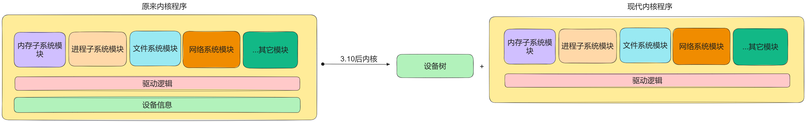

设备树¶
设备树是一种特殊的专门用于描述硬件信息的数据结构，它由一系列节点（node）和属性（property）组成，节点本身还可以包含子节点，就像一棵树状结构一样。设备树中可以描述的信息包括：
- CPU 的数量和类别
- 内存基地址和大小
- 总线和桥的配置
- 硬件外设的地址
- 中断控制器和中断使用情况
- GPIO 控制器和 GPIO 使用情况
- 时钟控制器和时钟使用情况
设备树的由来¶
现代驱动模型： 设备 + 总线 + 驱动 ，设备树就是用来替换驱动模型中的设备模块的，目的是为了实现设备资源信息与内核分离。

分离之后，由 uboot 或者其他 bootloader 将内核镜像及设备树二进制文件加载到不同的内存地址处，内核负责解析设备树，并根据设备树中的信息配置设备。
详细过程见：setup_arch
DTS、DTB和DTC¶
- dtsi：描述设备共有信息
- dts：描述设备独有信息
- dtc：设备树编译器
- dtb：设备树二进制文件
使用 DTC 工具编译生成 .dtb 文件：
反过来可以生成 .dts 文件：
make dtbs会编译所有的 .dts 文件，如果要编译指定的 .dtb，请使用make board_name.dtb。
DTS基本语法¶
设备树绑定文档
位于<Documentation/devicetree/bindings>目录下，主要内容包括：
- 该模块的基本描述
- 必须属性
- 可选属性
- 一个例子
设备树就是由一系列 node 和 child node 组成的，每个 node 都包含一些属性用来描述这个 node 的信息。
属性值标识了设备的特性，它的值可以是以下几种：
- 可能为空。
- 可能是一个 u32、u64 的数值，也可以是数组。
- 可能是一个字符串，或者是 string list。
节点命名¶
每个节点必须有个命名，格式为 label:name@unit-address。
- label：节点别名
- name：节点名称
- unit-address：节点地址
特殊节点¶
别名节点aliases：用来给 device-node 定义别名，因为每次写一长串路径比较麻烦。
chosen节点：用来定义启动参数，其父节点必须是根节点。内核的一些启动参数可以通过chosen节点下的bootargs属性来设置，它可以被 bootloader 读取：
属性¶
节点由一堆属性组成，SoC 厂商有各自不同的定义，这里只介绍常用属性，更具体的可以参考相关手册。
compatible¶
compatible属性指定了设备的型号，用来与驱动匹配。它的格式为：(制造商，型号)。compatible也可以有多个属性值，按照优先级的顺序进行匹配。
对于platform_drvier而言，在程序中指明一个 of 匹配表之后，就可以和对应的设备树节点进行匹配，然后调用probe()函数，做一些初始化操作：
static const struct of_device_id rockchip_rk3399_match[] = {
{ .compatible = "rockchip,rk3399" },
{/*empty*/},
};
status¶
status属性的值与设备状态有关，如果某节点的status属性为"okay"且有compatible属性，则内核会将其转换为platform_device设备，最终与驱动绑定。
reg¶
内存映射设备将有以下属性的节点映射到设备树中：
- reg
- #address-cells
- #size-cells
每个内存映射设备都有一个reg属性，格式为reg=<address1 length1 [address2 length2] ....>。每个地址值和长度都是一个 32 位的整数，称为 cells。reg属性的内容由父节点的 #address-cells 和 #size-cells 属性决定。
cpus {
#address-cells = <1>;
#size-cells = <0>;
cpu@0 {
compatible = "arm, cortext-a9";
reg = <0x0>;
};
cpu@1 {
compatible = "arm, cortext-a9";
reg = <0x1>;
};
}
在 cpus 节点中，#address-cells 被设置为1，而 #size-cells 被设置为0。这意味着子节点的reg值是一个单独的u32，只表示地址，没有长度信息。
注意reg值必须匹配节点名称中的单元地址。
/dts-v1/;
/ {
#address-cells = <1>;
#size-cells = <1>;
...
serial@101f0000 {
compatible = "arm,pl011";
reg = <0x101f0000 0x1000 >;
};
serial@101f2000 {
compatible = "arm,pl011";
reg = <0x101f2000 0x1000 >;
};
gpio@101f3000 {
compatible = "arm,pl061";
reg = <0x101f3000 0x1000
0x101f4000 0x0010>;
};
interrupt-controller@10140000 {
compatible = "arm,pl190";
reg = <0x10140000 0x1000 >;
};
spi@10115000 {
compatible = "arm,pl022";
reg = <0x10115000 0x1000 >;
};
...
};
以上每个设备都被分配了一个长度为 32 位的基地址。还有一些设备依赖于外部总线：
external-bus {
#address-cells = <2>;
#size-cells = <1>;
ethernet@0,0 {
compatible = "smc,smc91c111";
reg = <0 0 0x1000>;
};
i2c@1,0 {
compatible = "acme,a1234-i2c-bus";
reg = <1 0 0x1000>;
rtc@58 {
compatible = "maxim,ds1338";
};
};
flash@2,0 {
compatible = "samsung,k8f1315ebm", "cfi-flash";
reg = <2 0 0x4000000>;
};
};
external-bus 使用 2 个地址单元来描述节点，第一位表示 chipselect 编号，第二位表示 offset。所以每个reg属性值包含了 3 个 cells。
还有一些设备并不由 CPU 访问，比如 i2c 总线上的节点：
i2c@1,0 {
compatible = "acme,a1234-i2c-bus";
#address-cells = <1>;
#size-cells = <0>;
reg = <1 0 0x1000>;
rtc@58 {
compatible = "maxim,ds1338";
reg = <58>;
};
};
由于 i2c 总线访问设备需要地址号，但并不需要长度信息，因此reg属性只包含一个 cell。
ranges¶
range是地址映射表，按照（子地址，父地址，映射长度）的格式编写。
子地址由 ranges 所在节点的"#address-cells"属性决定，父地址由 ranges 父节点的"#address-cells"属性决定，映射长度由 ranges 父节点的"#size-cells"属性决定。
以 ranges=<0x0 0x10 0x20> 为例，表示将子地址的 0x0 映射到父地址的 0x10，共映射 0x20 个字节。
ranges属性用来指定某个设备的地址范围或者IO范围，这是对设备进行寻址的重要信息。操作系统通过ranges属性获知哪些内存区域或者IO端口是被硬件设备所占用的。
根据 ranges 属性的不同把设备分成三类：
- ranges 属性不为空：非内存映射型设备，CPU 不可以直接访问，需要通过地址映射
- ranges 属性为空：内存映射型设备，CPU 可以直接访问
- 没有 ranges 属性：只能被父节点访问
intc¶
用于表示中断控制器的相关信息，可以包含以下信息：
- interrupt-controller
- interrupt-cells
- interrupt-parent
- interrupts
中断控制器更详细的内容见中断子系统。
设备树操作函数¶
内核提供了一系列函数来操作设备树中的节点和属性信息，这些函数统一以of开头，定义在<include/linux/of.h>中。
内核使用device_node结构体来描述一个节点：
struct device_node {
const char *name;
phandle phandle;
const char *full_name;
struct fwnode_handle fwnode;
struct property *properties;
struct property *deadprops; /* removed properties */
struct device_node *parent;
struct device_node *child;
struct device_node *sibling;
#if defined(CONFIG_OF_KOBJ)
struct kobject kobj;
#endif
unsigned long _flags;
void *data;
#if defined(CONFIG_SPARC)
unsigned int unique_id;
struct of_irq_controller *irq_trans;
#endif
};
name：节点中的name属性
phandle：节点引用值，类似于引用计数
full_name：节点的名字
properties：属性
struct property的定义如下：
struct property{
char *name; //属性名
int length; //属性值的长度
void *value; //指向属性值的指针
struct property *next; //指向下一个属性的指针
unsigned long _flags; //表示属性的类别
unsigned int unique_id; //标识设备的唯一属性
struct bin_attribute attr; //表示属性的一些元数据
};
查找节点¶
-
通过节点名字查找指定节点
from：开始查找的节点，NULL则表示从根节点开始查找
name：要查找的节点名
返回值：找到的节点，NULL表示失败
-
通过
device_type和compatible两个属性来查找指定节点 -
通过
of_device_id匹配表来查找指定节点 -
通过路径来查找指定节点
path：带有全路径的节点名，可以使用节点的别名
-
通过亲缘关系来查找节点：